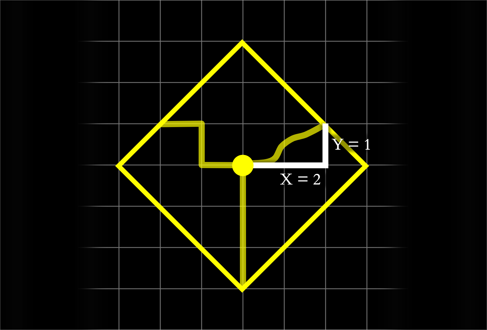
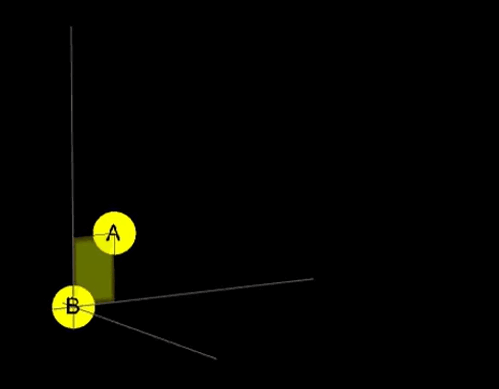
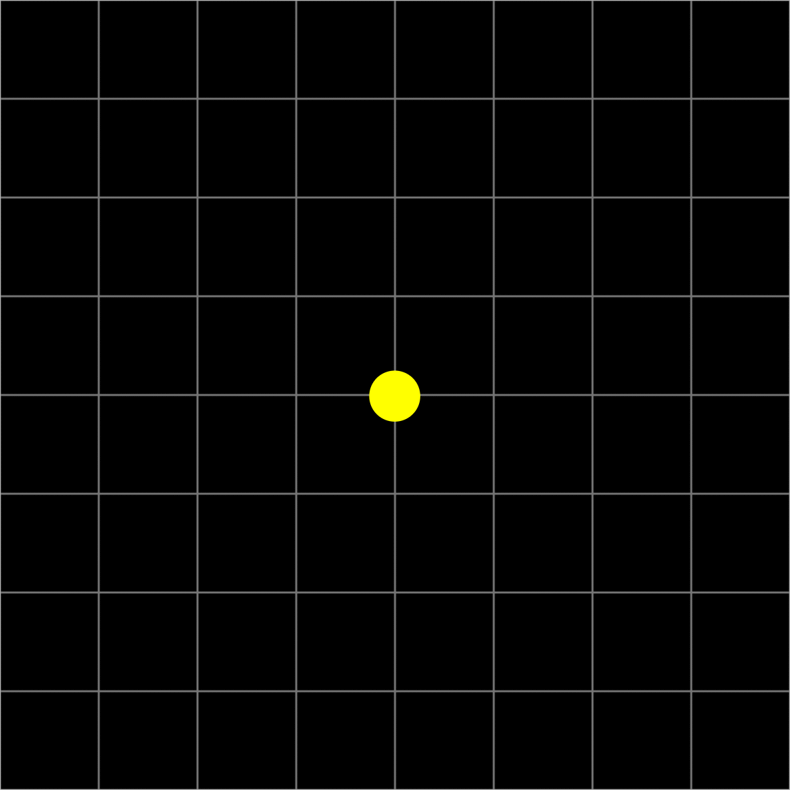
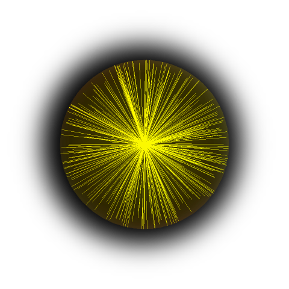

Shooting lasers in taxicab space
Kamil Przespolewski
Target audience: everyone who is comfortable with a notion of distance.
If you aren't – don't worry. It's a very intuitive topic, which you can learn in less than 15 minutes without any background in math beyond adding and multiplying. Idk why it's only thaught on university level. Anyways, check out What is a distance? See you!
How does the circle look in the taxicab metric space? Thus far the only answer I’ve heard is “It looks like a square.”
Why does nobody seem to take this question literally? I mean, how a taxicab circle would look like for beings living there? To answer this I have set up the mission to build a pinhole camera and record how the circle is projected onto it.
First, a quick reminder. A ball is a collection of points equidistant from a center. In taxicab metric space when we graph those points they form a square. If you are not feeling comfortable with this, check out What is a distance?
Distance(A, B) = |x₁ - x₂| + |y₁ , y₂|.
In 3D we simply add "z" coordinate. 
Pinhole camera works in a straightforward way.
Without a hole (a) light ray from a point located on an object spreads on a whole page. No image is created. By putting a wall with a pinhole between an object and image plane (b) we can relate a single point on a object with a single point on a image plane. If we'd cut off light coming from all other areas, we'd see an upside down projection of what is in front of the hole. Now the question is: what will this technique produce inside the taxicab world?
Defining a light ray
We've just definded taxicab light rays from A to B as all the shortest paths inside this box, yay!
What a taxicab light ray is? I think you will agree, that taxicab light ray should be similar to classical light ray. What do we know about them? They travel via the shortest path. In the euclidean world, the shortest path is unique. However, in the taxicab metric space, there are many shortest paths from A to B (in most cases). Thus I propose to define taxicab light rays from A to B as the set of all of the shortest paths from A to B. In 2D they will fit in a rectangle, and in 3D they fit in a cuboid.
How many light rays fit in a cuboid? Are they uniformly spread? How does intensity change when a cuboid grows? These are good questions, but let's start simply: assume that the cuboid is uniformly illuminated and intensity is constant.
Simple set up
In such a case, what happens when you shoot a laser? It depends where you stand and where you are pointing at! If you point a laser in parallel to one of the axes, the laser behaves in a way we are used to. But point it to a slightly different point and an illuminated line grows to a rectangle/cuboid. This is quite funny. Taxicab beings could say where the lines are parallel to the axes – something impossible in our world. They could debunk statements like “I am the center of the universe, and axes rotate with me”.
Okay, enough lasers. Let’s go back to the main question: How do projections look like?
In 2D taxicab shortest paths from A to B fit in a rectangle (a). Now limit light rays by a wall with a pinhole (b). This is equivalent to checking what are the shortest paths from A to pinhole and from pinhole to B. Put the image plane (c). Light from a single point is spread equally on half of the image plane’s length.
All the light which passes through a pinhole spreads anyway. This is a similar situation to one in the euclidean world, in which there is no pinhole. We could think a bit more about what would happen with multiple points and multiple intensities with mixing. I bet that we wouldn’t get more than gradients. If this is true, current assumptions lead to the conclusion, that the taxicab circle looks like anything else!
Density

Maybe we should tweak our assumption about uniformly illuminated cuboids. Why? Take a 2D taxicab metric space with integers (instead of reals, as previously). It basically means that we have “jumps” and, by hand, we can calculate how many paths light could take from A to B. Take some point, call it A. Emit light from it. After some time light traveled three units.
By the way, the Pascal triangle is hiding here.
Eventhough distances (A to B, and A to C) are equal, there are three ways to get from A to B, but only one from A to C.
We can illustrate it further in 3D with the bigger ball with light rays picked at random. Here 400 random light rays in the taxicab ball form a pattern.
This is in contrast to the euclidean ball, where random light rays spread uniformly.

I like that! Let’s see how projections work in this case.
From each point (in the lower part, since it only affects projection) emit two random light rays.
None of them passed through a point! Note that a circle is quite close to the pinhole. In the euclidean world, its projection would be gigantic. Moreover in this particular case the taxicab circle does not look like it at all, because there is no image projected on an image plane! Since most of the randomly sampled rays go sideways, moving the circle closer to the pinhole won’t help at all. But shifting it sideways will.
Only a single light ray touches the image plane! We could emit more random light rays, but even that wouldn’t help to extract more information. This is because all light rays after passing through go left/down (50/50 chance) or right/down. If we shifted the circle even more to the right, or picked a different shape, in a way so one light ray would pass through a pinhole, the projection wouldn’t change more than it could change by repeating our simulation. If taxicab beings had eyes they would probably be pretty useless. Probably there is a method they could evolve to extract more information, but it would perhaps involve sampling from different perspectives (maybe walking and touching would be more effective).
What happens when we try to go from discrete (integers) back to the smooth (reals) world? I don’t know yet. But it seems that there are multiple valid methods that give different answers to this question (like in the Bertrand's Paradox). So thus far the question is open, feel free to hmu.
Summary
We've seen how a popular phrase, “a circle in a taxicab looks like a square”, can be answered differently. We haven’t discovered anything great, but, for me, it was fun anyways. It led us naturally to combinatorial problems and issues with randomness, which I will definitely check in coming months. The exercise of imagining oneself inside mathematical abstractions is one of standard ways to form intuitions. I forgot who teched me this, but I have been reminded of it recently by Jordan Ellenberg who mentioned exercise in one of Thurston’s books.